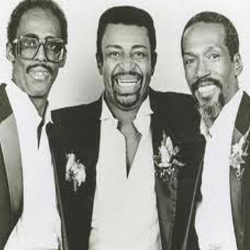

Splinter Groups
Ruffin, Kendricks & Edwards
The most well known splinter was "Ruffin, Kendricks & Edwards: Former Leads of the Temptations", which featured the three former Temptations and three other members, David Sea, who'd been a consideration to replace Edwards in 1984, Nate Evans, a former member of The Impressions, and a female vocalist.
Following the death of David Ruffin, Dennis Edwards and Eddie Kendricks began touring as "The Temptations", still with David Sea and Nate Evans, and bringing in another former Temptation, Damon Harris. The group had different sixth vocalists at different times, including Charles Blackmon (Blagman), from The Choice Four, and Curtis Taylor, but their use of the Temptations name prompted a legal battle with Otis Williams. The legal battle was resolved in favor of Otis Williams who is still touring as the last original Temptation.
Dennis Edwards and Damon Harris form offshoot groups
Following the death of Eddie Kendricks, the group splintered. Dennis formed "Dennis Edwards and the Temptations Revue", Damon formed "Damon Harris and the Temptations Revue" featuring future Temptation Joe Herndon, Evans and Taylor formed a Temptations tribute band[39] and David Sea went on to a solo career.
Edwards' group, whose lineup in 1993 featured Edwards, Mike Patillo (bass), Bernard Gibson (tenor), a fourth male member, and a female member, has appeared on several PBS music specials. The female member was replaced by the returning David Sea in 1999, and the remaining male member by falsetto Chris Arnold in the early 2000s.
Bernard Gibson was fired in 2006, and replaced by another former Temptation, Ali-Ollie Woodson. Woodson had previously fronted an act called Ali-Ollie Woodson & the Emperors of Soul, the name being drawn from the Temptations boxed set released in 1994. Woodson left the group briefly in 2008, joining a Broadway review of The Greatest Love Story Ever Told, and was replaced by Paul Williams, Jr., son of the late Paul Williams, Sr. Woodson briefly rejoined, but left again due to cancer, with Paul Williams Jr. again taking his place. Woodson died on May 30, 2010.
Glenn Leonard's Temptations Revue
Harris later split from his "Temptations Revue", with the other four members joining another former Temptation falsetto, Glenn Leonard, to become "Glenn Leonard and the Temptations Experience." Joe Herndon left this group to join the Temptations[41] and his spot was filled by former Temptations bass singer Ray Davis. Following Davis' death on July 5, 2005, the spot was filled by another former Temptations bass singer Harry McGilberry, who died of an apparent drug overdose at the age of 56 on April 3, 2006. Damon Harris would form a new group later, billed as "Damon Harris and the Temptations Tribute."
Glenn Leonard has maintained his lineup throughout the 2000–2011 decade, and is billing his show "Glenn Leonard's Temptations Revue".His current lineup includes Kareem Ali, Pete Marshall from The Choice Four, Doc Devone, and Andre Jackson.
Richard Street's Temptations
Richard Street also leads a group, billed as "Richard Street" or "Richard Street's Temptations".Street is in the process of writing a book regarding his time with The Temptations entitled Ball of Confusion. If it is published, it will be the second autobiography regarding the group. In 1992, "Ruffin & Kendricks" roadie, Tony Turner, also wrote a book, assisted by Barbara Aria, contrasting Otis Williams' account of the group's glory days, entitled Deliver Us From Temptation.
"Legendary Lead Singers of The Temptations"
Leonard, Woodson, and Henderson have toured as "Legendary Lead Singers of the Temptations" and "The Temptations Reunion Show" since 2004. This prompted a lawsuit by Otis Williams filed in October 2007, citing not just the three performers but their managers and every venue that hosted them. Williams' complaint deals with their use of the name, "The Temptations", as well as claims that the act accepted considerably lower fees than The Temptations, hurting the group's reputation as well as the ability to work. Also cited is advertising by the venues claimed to be misleading by billing Leonard, Woodson and Henderson's group as "The Temptations".